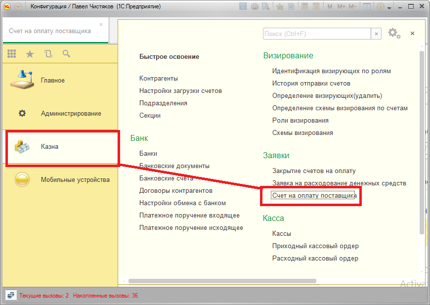
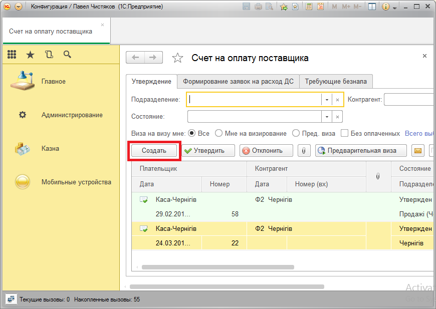
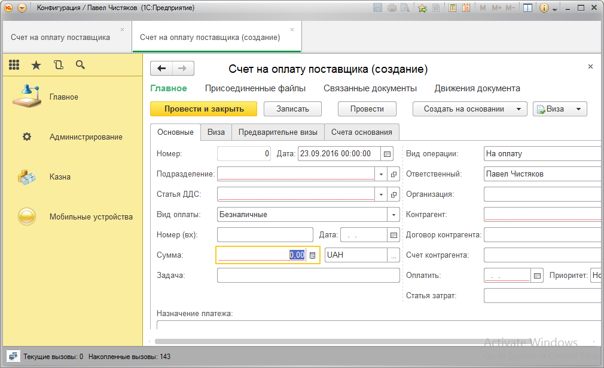

Создание Счета на оплату Поставщику
Для того чтобы перечислить поставщику деньги необходимо зарегистрировать в базе документ "Счет на оплату поставщика" и дождатся пока он пройдет все стадии визирования.
- Открываем список документов "Счет на оплату поставщика". Он находится в подсистеме "Казна", в разделе "Заявки". Сделать это можно нажав кнопки как показано на рисунке.

- Нажимаем кнопку "Создать".

- В появившемся окне в поле "Сумма" укажем сумму которую надо проплатить.

- В поле "Подразделение" укажите подразделение, которое будет осуществлять проплату.
- В поле "Статья ДДС" укажите статью движения денежных средств.
- В поле "Вид оплаты" укажите "Безналичные" если собираетесь перечислять деньги по безналу.
- В поле "Сумма" необходимо указать сумму, которую будем перекидывать.
- В поле "Организация" укажите организацию, которая будет осуществлять проплату.
- В поле "Контрагент" укажите контрагента, которому перечисляются деньги.
- В поле "Счет контрагента" укажите расчетный счет, на который будете перечислять деньги.
- В поле "Статья затрат" укажите статью затрат по которой будете перечислять.
- Нажмите кнопку "Провести и закрыть". Если во время проведения возникнут какие-то ошибки, внимательно прочитайте текст ошибки в сообщении и исправьте ее.